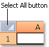
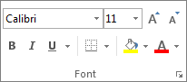
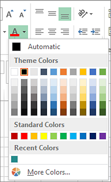
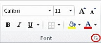
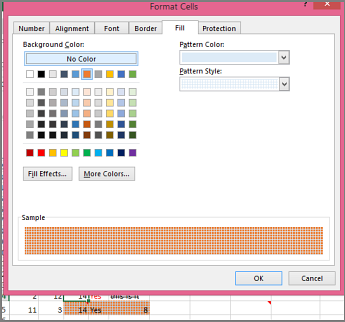
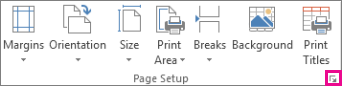

Remove cell colors, patterns, or fill effects
To remove any background colors, patterns, or fill effects from cells, just select the cells. Then click Home > arrow next to Fill Color, and then pick No Fill.

You can highlight data in cells by using Fill Color to add or change the background color or pattern of cells. Here's how:
Select the cells you want to highlight.
Tips:
To use a different background color for the whole worksheet, click the Select All button. This will hide the gridlines, but you can improve worksheet readability by displaying cell borders around all cells.

Click Home > the arrow next to Fill Color , or press Alt+H, H.

Under Theme Colors or Standard Colors, pick the color you want.
To use a custom color, click More Colors, and then in the Colors dialog box select the color you want.
Tip: To apply the most recently selected color, you can just click Fill Color . You'll also find up to 10 most recently selected custom colors under Recent Colors.
When you want something more than a just a solid color fill, try applying a pattern or fill effects.
Select the cell or range of cells you want to format.
Click Home > Format Cells dialog launcher, or press Ctrl+Shift+F.

On the Fill tab, under Background Color, pick the color you want.
To use a pattern with two colors, pick a color in the Pattern Color box, and then pick a pattern in the Pattern Style box.
To use a pattern with special effects, click Fill Effects, and then pick the options you want.
Tip: In the Sample box, you can preview the background, pattern, and fill effects you selected.
To remove any background colors, patterns, or fill effects from cells, just select the cells. Then click Home > arrow next to Fill Color, and then pick No Fill.
If print options are set to Black and white or Draft quality — either on purpose, or because the workbook has large or complex worksheets and charts that caused draft mode to be turned on automatically — cells won't print in color. Here's how you can fix that:
Click Page Layout > Page Setup dialog box launcher.

On the Sheet tab, under Print, uncheck the Black and white and Draft quality check boxes.